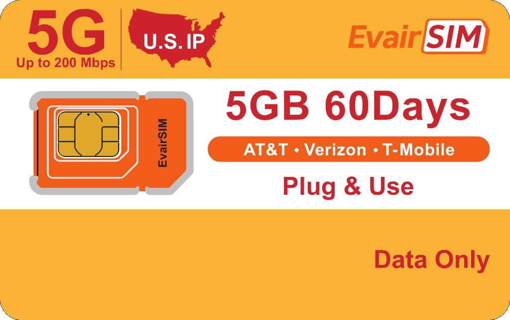

SIM Card User Manual
Get connected with EvairSIM
A compact setup guide for phones, tablets, MiFi devices, and supported cameras.
www.evairdigital.com
service@evairdigital.com

SIM Card User Manual
A compact setup guide for phones, tablets, MiFi devices, and supported cameras.
You are in
Scan the QR code to visit www.evairdigital.com and start your global connectivity experience.

Check plan details instantly. View your plan validity and remaining data.
Order new plans easily. Renew or switch plans with a few taps.
Get quick support. Report issues and connect with our team.
Take these key steps before using the SIM card.
If your phone is network-locked, contact the customer service team of the device retailer or carrier to unlock it.
Make sure your phone supports third-party SIM cards and has data roaming enabled.
Use one of these APNs when manual setup is required: globaldata, plus, or internet. Leave username and password blank.
Use the EvairSIM website to view your plan, add more data, or get support.
Visit www.evairdigital.com or scan the QR code in this booklet.
Use your SIM information to view plan validity, usage, and remaining data.
Browse available plans and select the option that matches your device and use case.
Contact support in the app or email service@evairdigital.com.
Use this when your iPhone or iPad does not connect automatically.
Power on your device after inserting the EvairSIM card.
Tap Cellular, then tap the SIM card that uses EvairSIM.
Turn on Data Roaming, then open Network Selection.
Disable Automatic, wait 1-2 minutes, then manually select the carrier.
Most devices connect automatically. If not, enter the APN manually.
Install the EvairSIM card and wait for the device to detect it.
Tap Cellular, then tap the SIM card.
Enable Data Roaming, then tap Cellular Data Network.
Enter APN plus. Leave Username and Password blank.
| APN | plus |
|---|---|
| Username | Leave blank |
| Password | Leave blank |
Menu names can vary by Android brand, but the carrier-selection flow is similar.
Install the EvairSIM card and power on your device.
Tap Mobile Network, then tap SIM Card.
Turn on Data Roaming and tap Carrier or Network Operator.
Disable Automatic Selection, wait 1-2 minutes, then manually select the carrier.
Use this if the device has no internet after roaming is enabled.
Go to Settings, then Mobile Network, then SIM Card.
Tap Access Point Names or APN. This label varies by model.
Tap + or Add New APN, then create a manual configuration.
Set APN to plus. Leave Username and Password blank. Save and select it.
Use the device admin panel to enter the APN manually.
Insert the SIM card into the MiFi, hotspot, or router.
Open a browser and enter the device IP address, often 192.168.0.1 or 192.168.1.1.
Use the admin username and password from your device manual.
Go to Settings, Network, then APN. Enable roaming if the device offers it.
| APN | plus |
|---|---|
| Username / Password | Leave both blank |
Based on Reolink camera settings. Some models require APN import by SD card.
On a computer, create a text file named my_custom_apn.
Enter apn=plus, username=, and password=. Leave username and password empty.
Save the file, then upload my_custom_apn.txt to the root directory of a FAT32 Micro SD card.
Turn off the camera. Install the SIM card and SD card. Power on, then press reset for a few seconds.
Use this page when phone, MiFi, or camera menus ask for network values.
| Preferred APN | plus |
|---|---|
| Other accepted APNs | globaldata or internet |
| Username | Leave blank |
| Password | Leave blank |
| Roaming | Enable data roaming |
Save the APN, select it as active, wait about 2 minutes, then restart the device if it still does not connect.
Send screenshots of your Data Roaming and APN configuration pages to service@evairdigital.com.
Please enable Data Roaming on your phone and wait about 2 minutes for the SIM card to activate and connect automatically. Alternatively, restart your phone after enabling roaming.
Your device may not support automatic APN configuration. Please manually set the APN to one of the following: globaldata, plus, or internet.
EvairSIM SIM cards support automatic APN configuration. Some MiFi and IoT devices have roaming enabled by default, which triggers automatic activation once the SIM is inserted. The plan shows as expired once the package duration ends.
This indicates that your device is carrier-locked and does not support SIM cards from other providers. Contact the device provider to unlock it. EvairSIM IoT cards are compatible with unlocked devices.
Please check if your device supports US network bands. Our SIM cards support B2, B4, B12, B13, B14, B30, B66, B71 for 4G/LTE and n5, n41, n71, n77, n258, n260, n261 for 5G. If your device supports these bands but still cannot connect, send screenshots of your roaming and APN pages to EvairSIM support.
You can reach us via the app or by emailing service@evairdigital.com.
Your network speed depends on the carrier your device selects and the signal strength in your area. Try manually switching network providers and choosing the strongest signal among AT&T, Verizon, or T-Mobile.
Please log in to the EvairSIM app or website and wait 15 minutes to check if your data package has been exhausted. If you still have data but cannot connect, manually switch to a different carrier.
No. Download the EvairSIM app or visit the top-up page to subscribe to a new plan. You can continue using the same SIM card.
Your device may not support automatic APN configuration. Contact the camera support team to ask how to manually configure the APN on that device. The EvairSIM APN is any of these: globaldata, plus, or internet.
No. If you need to use the SIM card in multiple regions, such as the US and Europe, or the US, Mexico, and Canada, you will need to purchase our Multi-Region SIM card.
Not exactly. The EvairSIM IoT card provides a local US IP, which supports US-based apps and streaming services. Because the card supports all three major US carriers, the IP address may change during network fluctuations or carrier switching.
No. The EvairSIM card is supported in the Mainland US, Alaska, and Hawaii. It is not currently supported in other US overseas territories or islands.
service@evairdigital.com
Check data, top up, and contact support at www.evairdigital.com.